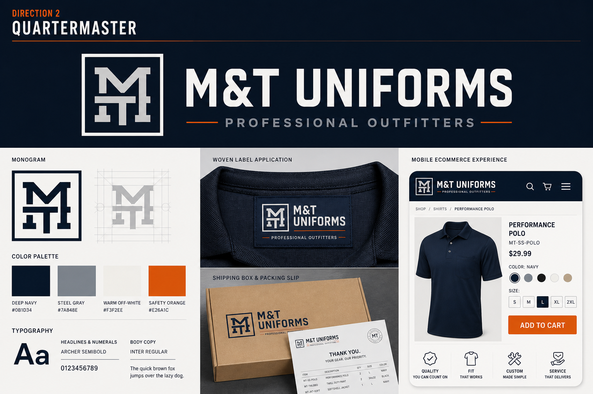

Direction 02
Quartermaster
Status: recovery groundwork verified. Private exports and the temporary ordering notice remain.
Recommended direction

The strongest ecommerce spine: disciplined, broad enough for every customer group, and credible across labels, packing slips, agency accounts, and a modern storefront.
- Leads with
- Product clarity and dependable fulfillment
- Borrow from 03
- Documentary warmth and real local-service photography
- Main risk
- Can feel impersonal without authentic people and custom-work stories